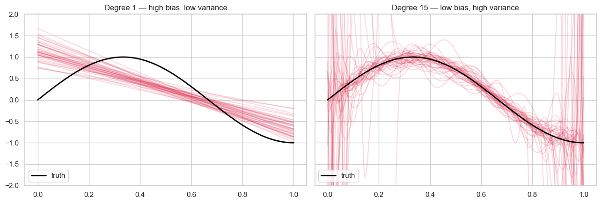
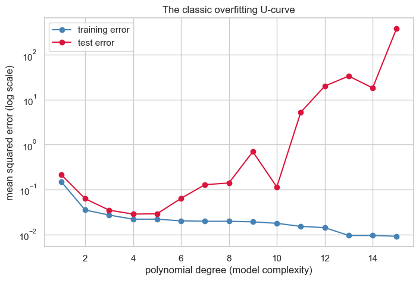
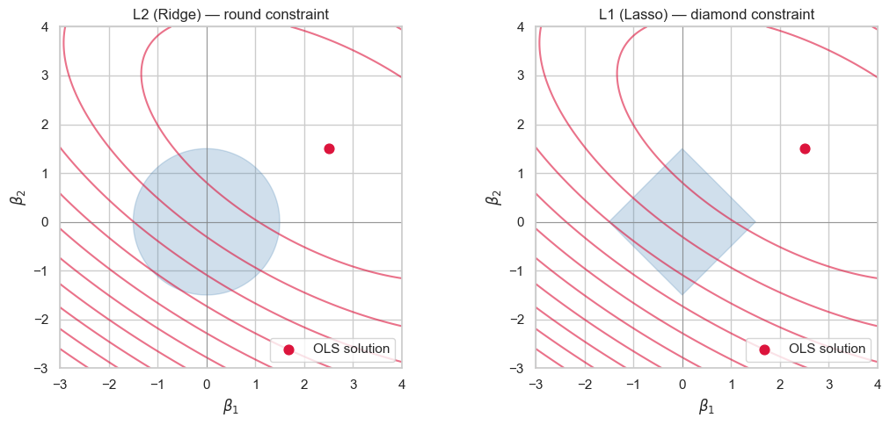
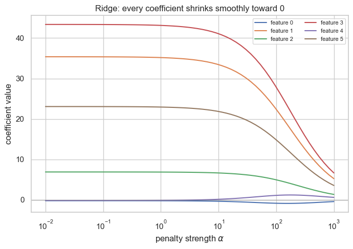
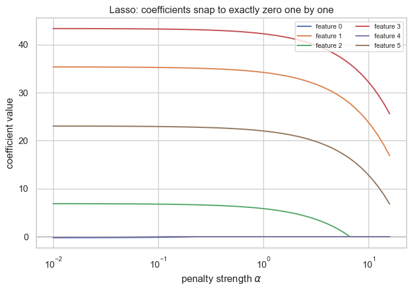
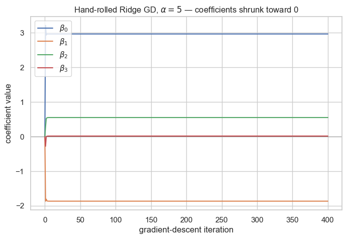

Bias, Variance & Regularization¶
Data 200 · Applied Statistical Analysis · Instructor: Aayush Regmi
In the Parameter Estimation notebook we learned how a model finds its parameters — through OLS, Gradient Descent, or MLE. This notebook is about the next question every data scientist hits:
My model fits the training data — but should it?
Sometimes the answer is no, because the model is memorising the noise instead of learning the pattern. We will look at why this happens (the bias-variance tradeoff), what it looks like (overfitting), and the standard tool for taming it (regularization — Ridge, Lasso, and Elastic Net).
Learning Objectives¶
By the end of this notebook you should be able to:
- Explain bias, variance, and irreducible noise in plain words and write down the error decomposition.
- Recognise the classic train-vs-test U-curve as a model gets more complex.
- Describe what regularization does mathematically — adding a penalty to the loss — and why it produces smoother fits.
- Compare L1 (Lasso), L2 (Ridge), and Elastic Net penalties and say when each is appropriate.
- Derive the gradient of the Ridge loss and run a hand-rolled gradient-descent loop to optimise it.
- Pick a sensible regularisation strength \(\alpha\) with cross-validation.
Setup¶
import numpy as np
import pandas as pd
import matplotlib.pyplot as plt
import seaborn as sns
from sklearn.linear_model import (
LinearRegression, Ridge, Lasso, ElasticNet,
RidgeCV, LassoCV,
)
from sklearn.preprocessing import PolynomialFeatures, StandardScaler
from sklearn.pipeline import make_pipeline
from sklearn.metrics import mean_squared_error
sns.set_theme(style="whitegrid")
plt.rcParams["figure.figsize"] = (8, 5)
rng = np.random.default_rng(0)
1. Why a Model Goes Wrong — Bias, Variance, Noise¶
Every prediction error a model makes can be split into three ingredients:
- Bias — the model is systematically wrong because it is too simple to capture the true pattern. A straight line trying to fit a curve has high bias.
- Variance — the model is too sensitive to the particular training sample it saw. Train it on a slightly different sample and the fit changes dramatically. A high-degree polynomial has high variance.
- Noise — the part of the data we cannot explain no matter how good the model is. Measurement error, randomness, things our features don't see. This is sometimes called irreducible error.
These three combine in the famous error decomposition:
Bias and variance pull in opposite directions — that's the tradeoff.
Seeing variance with our own eyes¶
If "variance" means how much would my fit change if I had a different training sample?, the easiest way to see it is to resample the training data many times and re-fit each time. The spread of the resulting curves is the variance.
Below we do exactly that for two models on the same noisy sin-curve: a degree-1 line (high bias, low variance) and a degree-15 polynomial (low bias, high variance).
def true_f(x):
return np.sin(1.5 * np.pi * x)
x_grid = np.linspace(0, 1, 200)
n_samples = 30
n_resamples = 40
fig, axes = plt.subplots(1, 2, figsize=(13, 4.5), sharey=True)
for ax, deg, title in zip(
axes,
[1, 15],
["Degree 1 — high bias, low variance",
"Degree 15 — low bias, high variance"],
):
for _ in range(n_resamples):
x = rng.uniform(0, 1, n_samples)
y = true_f(x) + rng.normal(scale=0.15, size=n_samples)
model = make_pipeline(PolynomialFeatures(deg), LinearRegression())
model.fit(x.reshape(-1, 1), y)
ax.plot(x_grid, model.predict(x_grid.reshape(-1, 1)),
color="crimson", alpha=0.15)
ax.plot(x_grid, true_f(x_grid), color="black", lw=2, label="truth")
ax.set_ylim(-2, 2)
ax.set_title(title)
ax.legend(loc="lower left")
plt.tight_layout(); plt.show()

Read the picture:
- Left: every red line is almost the same — the model is so rigid it gives basically the same answer no matter which sample it sees. Low variance, but the line is far from the truth — high bias.
- Right: the red lines are wildly different from one another — the fit is extremely sensitive to which 30 points it happens to see. Low bias on average, but huge variance.
The job of regularization is to drag the right-hand picture toward a tighter, calmer family of curves, accepting a tiny bit of bias in exchange for a big drop in variance.
2. Overfitting in Pictures¶
Let's now look at a single training set and increase the model's complexity, watching both the training error and the test error as we go. This is the canonical "U-shape" curve — the fingerprint of overfitting.
n_train, n_test = 30, 200
x_train = np.sort(rng.uniform(0, 1, n_train))
y_train = true_f(x_train) + rng.normal(scale=0.15, size=n_train)
x_test = np.sort(rng.uniform(0, 1, n_test))
y_test = true_f(x_test) + rng.normal(scale=0.15, size=n_test)
degrees = list(range(1, 16))
train_err, test_err = [], []
for d in degrees:
m = make_pipeline(PolynomialFeatures(d), LinearRegression())
m.fit(x_train.reshape(-1, 1), y_train)
train_err.append(mean_squared_error(y_train, m.predict(x_train.reshape(-1, 1))))
test_err .append(mean_squared_error(y_test , m.predict(x_test .reshape(-1, 1))))
plt.plot(degrees, train_err, marker="o", color="steelblue", label="training error")
plt.plot(degrees, test_err , marker="o", color="crimson", label="test error")
plt.yscale("log")
plt.xlabel("polynomial degree (model complexity)")
plt.ylabel("mean squared error (log scale)")
plt.title("The classic overfitting U-curve")
plt.legend(); plt.show()
/Users/aayush/micromamba/envs/stats/lib/python3.10/site-packages/sklearn/linear_model/_base.py:280: RuntimeWarning: divide by zero encountered in matmul
return X @ coef_ + self.intercept_
/Users/aayush/micromamba/envs/stats/lib/python3.10/site-packages/sklearn/linear_model/_base.py:280: RuntimeWarning: overflow encountered in matmul
return X @ coef_ + self.intercept_
/Users/aayush/micromamba/envs/stats/lib/python3.10/site-packages/sklearn/linear_model/_base.py:280: RuntimeWarning: invalid value encountered in matmul
return X @ coef_ + self.intercept_
/Users/aayush/micromamba/envs/stats/lib/python3.10/site-packages/sklearn/linear_model/_base.py:280: RuntimeWarning: divide by zero encountered in matmul
return X @ coef_ + self.intercept_
/Users/aayush/micromamba/envs/stats/lib/python3.10/site-packages/sklearn/linear_model/_base.py:280: RuntimeWarning: overflow encountered in matmul
return X @ coef_ + self.intercept_
/Users/aayush/micromamba/envs/stats/lib/python3.10/site-packages/sklearn/linear_model/_base.py:280: RuntimeWarning: invalid value encountered in matmul
return X @ coef_ + self.intercept_
/Users/aayush/micromamba/envs/stats/lib/python3.10/site-packages/sklearn/linear_model/_base.py:280: RuntimeWarning: divide by zero encountered in matmul
return X @ coef_ + self.intercept_
/Users/aayush/micromamba/envs/stats/lib/python3.10/site-packages/sklearn/linear_model/_base.py:280: RuntimeWarning: overflow encountered in matmul
return X @ coef_ + self.intercept_
/Users/aayush/micromamba/envs/stats/lib/python3.10/site-packages/sklearn/linear_model/_base.py:280: RuntimeWarning: invalid value encountered in matmul
return X @ coef_ + self.intercept_
/Users/aayush/micromamba/envs/stats/lib/python3.10/site-packages/sklearn/linear_model/_base.py:280: RuntimeWarning: divide by zero encountered in matmul
return X @ coef_ + self.intercept_
/Users/aayush/micromamba/envs/stats/lib/python3.10/site-packages/sklearn/linear_model/_base.py:280: RuntimeWarning: overflow encountered in matmul
return X @ coef_ + self.intercept_
/Users/aayush/micromamba/envs/stats/lib/python3.10/site-packages/sklearn/linear_model/_base.py:280: RuntimeWarning: invalid value encountered in matmul
return X @ coef_ + self.intercept_
/Users/aayush/micromamba/envs/stats/lib/python3.10/site-packages/sklearn/linear_model/_base.py:280: RuntimeWarning: divide by zero encountered in matmul
return X @ coef_ + self.intercept_
/Users/aayush/micromamba/envs/stats/lib/python3.10/site-packages/sklearn/linear_model/_base.py:280: RuntimeWarning: overflow encountered in matmul
return X @ coef_ + self.intercept_
/Users/aayush/micromamba/envs/stats/lib/python3.10/site-packages/sklearn/linear_model/_base.py:280: RuntimeWarning: invalid value encountered in matmul
return X @ coef_ + self.intercept_
/Users/aayush/micromamba/envs/stats/lib/python3.10/site-packages/sklearn/linear_model/_base.py:280: RuntimeWarning: divide by zero encountered in matmul
return X @ coef_ + self.intercept_
/Users/aayush/micromamba/envs/stats/lib/python3.10/site-packages/sklearn/linear_model/_base.py:280: RuntimeWarning: overflow encountered in matmul
return X @ coef_ + self.intercept_
/Users/aayush/micromamba/envs/stats/lib/python3.10/site-packages/sklearn/linear_model/_base.py:280: RuntimeWarning: invalid value encountered in matmul
return X @ coef_ + self.intercept_
/Users/aayush/micromamba/envs/stats/lib/python3.10/site-packages/sklearn/linear_model/_base.py:280: RuntimeWarning: divide by zero encountered in matmul
return X @ coef_ + self.intercept_
/Users/aayush/micromamba/envs/stats/lib/python3.10/site-packages/sklearn/linear_model/_base.py:280: RuntimeWarning: overflow encountered in matmul
return X @ coef_ + self.intercept_
/Users/aayush/micromamba/envs/stats/lib/python3.10/site-packages/sklearn/linear_model/_base.py:280: RuntimeWarning: invalid value encountered in matmul
return X @ coef_ + self.intercept_
/Users/aayush/micromamba/envs/stats/lib/python3.10/site-packages/sklearn/linear_model/_base.py:280: RuntimeWarning: divide by zero encountered in matmul
return X @ coef_ + self.intercept_
/Users/aayush/micromamba/envs/stats/lib/python3.10/site-packages/sklearn/linear_model/_base.py:280: RuntimeWarning: overflow encountered in matmul
return X @ coef_ + self.intercept_
/Users/aayush/micromamba/envs/stats/lib/python3.10/site-packages/sklearn/linear_model/_base.py:280: RuntimeWarning: invalid value encountered in matmul
return X @ coef_ + self.intercept_
/Users/aayush/micromamba/envs/stats/lib/python3.10/site-packages/sklearn/linear_model/_base.py:280: RuntimeWarning: divide by zero encountered in matmul
return X @ coef_ + self.intercept_
/Users/aayush/micromamba/envs/stats/lib/python3.10/site-packages/sklearn/linear_model/_base.py:280: RuntimeWarning: overflow encountered in matmul
return X @ coef_ + self.intercept_
/Users/aayush/micromamba/envs/stats/lib/python3.10/site-packages/sklearn/linear_model/_base.py:280: RuntimeWarning: invalid value encountered in matmul
return X @ coef_ + self.intercept_
/Users/aayush/micromamba/envs/stats/lib/python3.10/site-packages/sklearn/linear_model/_base.py:280: RuntimeWarning: divide by zero encountered in matmul
return X @ coef_ + self.intercept_
/Users/aayush/micromamba/envs/stats/lib/python3.10/site-packages/sklearn/linear_model/_base.py:280: RuntimeWarning: overflow encountered in matmul
return X @ coef_ + self.intercept_
/Users/aayush/micromamba/envs/stats/lib/python3.10/site-packages/sklearn/linear_model/_base.py:280: RuntimeWarning: invalid value encountered in matmul
return X @ coef_ + self.intercept_
/Users/aayush/micromamba/envs/stats/lib/python3.10/site-packages/sklearn/linear_model/_base.py:280: RuntimeWarning: divide by zero encountered in matmul
return X @ coef_ + self.intercept_
/Users/aayush/micromamba/envs/stats/lib/python3.10/site-packages/sklearn/linear_model/_base.py:280: RuntimeWarning: overflow encountered in matmul
return X @ coef_ + self.intercept_
/Users/aayush/micromamba/envs/stats/lib/python3.10/site-packages/sklearn/linear_model/_base.py:280: RuntimeWarning: invalid value encountered in matmul
return X @ coef_ + self.intercept_

Read the curves:
- Training error keeps falling — a more flexible model can always fit the training points better.
- Test error falls at first (we're escaping high bias), reaches a minimum (the sweet spot), then climbs again as the model starts fitting noise instead of signal (variance takes over).
The minimum of the red curve is the model we actually want. Regularization is one of the cleanest tools for sliding along this curve without having to change the model's shape.
3. What Regularization Does — Mathematically, but Gently¶
Plain OLS picks coefficients \(\boldsymbol\beta\) to minimise the data loss:
Regularization adds a penalty that gets bigger when the coefficients themselves get bigger:
- \(R(\boldsymbol\beta)\) is the penalty function. Different choices give different regularizers (L1, L2, Elastic Net).
- \(\alpha \geq 0\) is the strength. \(\alpha = 0\) recovers plain OLS; \(\alpha \to \infty\) forces every coefficient to zero.
Why does this produce smoother fits? Wild, overfit curves need large coefficients to do their wiggling. By making the optimizer pay a price for large coefficients, we steer it toward flatter, calmer fits — at the cost of a small amount of bias.
The geometric picture¶
The picture below is one of the most useful in all of ML. The ellipses are contours of the OLS loss (concentric ovals around the OLS solution \(\hat{\boldsymbol\beta}\)). The shaded region is the set of coefficients allowed by the penalty — a circle for L2, a diamond for L1.
The regularised solution is the point where the smallest possible ellipse first touches the allowed region.
beta_star = np.array([2.5, 1.5]) # pretend OLS solution
g = np.linspace(-3, 4, 400)
B1, B2 = np.meshgrid(g, g)
L = (B1 - beta_star[0]) ** 2 + 1.6 * (B1 - beta_star[0]) * (B2 - beta_star[1]) \
+ 2 * (B2 - beta_star[1]) ** 2
fig, axes = plt.subplots(1, 2, figsize=(11, 5))
for ax, shape, title in zip(
axes,
["circle", "diamond"],
["L2 (Ridge) — round constraint", "L1 (Lasso) — diamond constraint"],
):
ax.contour(B1, B2, L, levels=12, colors="crimson", alpha=0.6)
ax.scatter(*beta_star, color="crimson", zorder=5, s=60, label="OLS solution")
theta = np.linspace(0, 2 * np.pi, 200)
if shape == "circle":
r = 1.5
ax.fill(r * np.cos(theta), r * np.sin(theta), color="steelblue", alpha=0.25)
else:
r = 1.5
d_x = r * np.array([1, 0, -1, 0, 1])
d_y = r * np.array([0, 1, 0, -1, 0])
ax.fill(d_x, d_y, color="steelblue", alpha=0.25)
ax.axhline(0, color="gray", lw=0.5); ax.axvline(0, color="gray", lw=0.5)
ax.set_xlim(-3, 4); ax.set_ylim(-3, 4); ax.set_aspect("equal")
ax.set_xlabel(r"$\beta_1$"); ax.set_ylabel(r"$\beta_2$")
ax.set_title(title); ax.legend(loc="lower right")
plt.tight_layout(); plt.show()

Notice the diamond's corners sit on the axes. The smallest ellipse will almost always touch the diamond at one of those corners — and a corner means one of the coefficients is exactly zero. That is the geometric reason Lasso does feature selection and Ridge does not.
4. Ridge (L2) Regularization¶
Ridge uses the squared penalty:
Squaring means bigger coefficients get punished disproportionately more. The result: Ridge shrinks all coefficients toward zero, but almost never lands exactly on zero. Use Ridge when you believe most features matter a little.
from sklearn.datasets import make_regression
X_r, y_r = make_regression(
n_samples=200, n_features=6, n_informative=4,
noise=8, random_state=0,
)
alphas = np.logspace(-2, 3, 60)
ridge_path = np.array([Ridge(alpha=a).fit(X_r, y_r).coef_ for a in alphas])
plt.figure(figsize=(8, 5))
for j in range(ridge_path.shape[1]):
plt.plot(alphas, ridge_path[:, j], label=f"feature {j}")
plt.xscale("log")
plt.xlabel(r"penalty strength $\alpha$")
plt.ylabel("coefficient value")
plt.title("Ridge: every coefficient shrinks smoothly toward 0")
plt.axhline(0, color="gray", lw=0.5)
plt.legend(fontsize=8, ncol=2); plt.show()

5. Lasso (L1) Regularization¶
Lasso uses the absolute-value penalty:
Because of the diamond geometry from §3, Lasso doesn't merely shrink coefficients — it snaps them to exactly zero one by one as \(\alpha\) grows. So Lasso doubles as an automatic feature selector: features with a zero coefficient have been dropped from the model.
alphas_l = np.logspace(-2, 1.2, 60)
lasso_path = np.array([
Lasso(alpha=a, max_iter=20000).fit(X_r, y_r).coef_ for a in alphas_l
])
plt.figure(figsize=(8, 5))
for j in range(lasso_path.shape[1]):
plt.plot(alphas_l, lasso_path[:, j], label=f"feature {j}")
plt.xscale("log")
plt.xlabel(r"penalty strength $\alpha$")
plt.ylabel("coefficient value")
plt.title("Lasso: coefficients snap to exactly zero one by one")
plt.axhline(0, color="gray", lw=0.5)
plt.legend(fontsize=8, ncol=2); plt.show()

6. Elastic Net — Mixing the Two¶
Elastic Net is just a weighted blend of L1 and L2:
The mixing parameter \(\rho \in [0, 1]\) slides between Lasso (\(\rho = 1\)) and Ridge (\(\rho = 0\)).
Reach for Elastic Net when:
- you have lots of features but groups of correlated ones (Lasso alone tends to keep just one from each group somewhat arbitrarily; Elastic Net keeps the group together while still doing some selection).
- you want some shrinkage and some feature dropping.
alpha_en = 0.5
for rho in [0.0, 0.5, 1.0]:
if rho == 0.0:
m = Ridge(alpha=alpha_en).fit(X_r, y_r)
label = "ρ=0 (pure Ridge)"
elif rho == 1.0:
m = Lasso(alpha=alpha_en, max_iter=20000).fit(X_r, y_r)
label = "ρ=1 (pure Lasso)"
else:
m = ElasticNet(alpha=alpha_en, l1_ratio=rho, max_iter=20000).fit(X_r, y_r)
label = f"ρ={rho} (Elastic Net)"
print(f"{label:<22} coefficients = {np.round(m.coef_, 2)}")
ρ=0 (pure Ridge) coefficients = [-0.23 35.28 6.87 43.26 -0.14 23. ]
ρ=0.5 (Elastic Net) coefficients = [-0.5 27.22 5.56 33.73 0.56 17.85]
ρ=1 (pure Lasso) coefficients = [-0. 34.8 6.36 42.83 -0. 22.54]
7. Optimizing a Regularised Loss¶
Let's actually solve for the Ridge coefficients with hand-rolled gradient descent — to make the abstract formulas concrete.
The Ridge gradient¶
The Ridge loss in matrix form is
Take the gradient with respect to \(\boldsymbol\beta\):
The Ridge gradient is just the OLS gradient plus a small pull toward zero. That is the only difference. We can plug it straight into the same gradient-descent update we used in the Parameter Estimation notebook.
# Build a small, slightly noisy linear problem with 4 features
n, p = 100, 4
X = rng.normal(size=(n, p))
true_beta = np.array([3.0, -2.0, 0.5, 0.0])
y = X @ true_beta + rng.normal(scale=1.0, size=n)
def ridge_gd(X, y, alpha=1.0, lr=0.005, n_iter=400):
beta = np.zeros(X.shape[1])
history = [beta.copy()]
for _ in range(n_iter):
grad = -2 * X.T @ (y - X @ beta) + 2 * alpha * beta
beta = beta - lr * grad
history.append(beta.copy())
return beta, np.array(history)
beta_hat, hist = ridge_gd(X, y, alpha=5.0, lr=0.005, n_iter=400)
print(f"True coefficients : {true_beta}")
print(f"Ridge GD estimate : {np.round(beta_hat, 3)}")
print(f"sklearn Ridge : {np.round(Ridge(alpha=5.0, fit_intercept=False).fit(X, y).coef_, 3)}")
True coefficients : [ 3. -2. 0.5 0. ]
Ridge GD estimate : [ 2.966 -1.868 0.55 0.014]
sklearn Ridge : [ 2.966 -1.868 0.55 0.014]
# Plot the trajectory of each coefficient as GD descends
for j in range(p):
plt.plot(hist[:, j], label=fr"$\beta_{j}$")
plt.axhline(0, color="gray", lw=0.5)
plt.xlabel("gradient-descent iteration")
plt.ylabel("coefficient value")
plt.title(r"Hand-rolled Ridge GD, $\alpha=5$ — coefficients shrunk toward 0")
plt.legend(); plt.show()

Two things to notice:
- The hand-rolled estimate matches what
sklearn.Ridgereturns — we really did just implement Ridge from scratch with one extra term in the gradient. - Every coefficient is smaller in magnitude than the true value. That bias toward zero is exactly the deal Ridge offers: a bit of bias in exchange for a lot less variance.
What about Lasso?¶
The Lasso penalty \(\sum_j |\beta_j|\) is not differentiable at
\(\beta_j = 0\) — the absolute value has a corner there. Ordinary
gradient descent doesn't quite work. The standard fixes are
subgradient methods or coordinate descent. The intuition is the
same — walk downhill on the loss — but the exact step rule has to
handle the corner. We'll happily let sklearn.Lasso do that for us.
8. Picking \(\alpha\) — Cross-Validation in One Minute¶
\(\alpha\) is a hyperparameter — it isn't learned from the training data the way \(\boldsymbol\beta\) is. The standard recipe is k-fold cross-validation:
- Split the training data into \(k\) equal-sized folds.
- For each candidate \(\alpha\), train on \(k-1\) folds and score on the held-out fold. Repeat for all \(k\) choices of held-out fold and average.
- Pick the \(\alpha\) with the best average score.
scikit-learn ships with RidgeCV and LassoCV that do this for you:
alphas_cv = np.logspace(-3, 3, 80)
ridge_cv = RidgeCV(alphas=alphas_cv, cv=5).fit(X_r, y_r)
lasso_cv = LassoCV(alphas=alphas_cv, cv=5, max_iter=20000).fit(X_r, y_r)
print(f"RidgeCV picked alpha = {ridge_cv.alpha_:.4f}")
print(f"LassoCV picked alpha = {lasso_cv.alpha_:.4f}")
RidgeCV picked alpha = 0.2694
LassoCV picked alpha = 0.1594
9. Key Takeaways¶
- Prediction error breaks into bias² + variance + noise. The first two are under your control; the third is not.
- Overfitting is the symptom: training error keeps falling while test error starts rising. The classic U-curve.
- Regularization adds a penalty \(\alpha R(\boldsymbol\beta)\) to the loss so the optimizer prefers smaller, calmer coefficients — trading a little bias for a lot less variance.
- Ridge (L2) shrinks coefficients smoothly. Lasso (L1) snaps them to zero, giving you feature selection for free. Elastic Net blends both.
- The gradient of the Ridge loss is the OLS gradient plus \(2\alpha\boldsymbol\beta\). Lasso needs a slightly fancier optimizer because of the corner at zero.
- Pick \(\alpha\) with cross-validation —
RidgeCVandLassoCVare one-liners.
10. Practice Exercises¶
- Bias-variance demo extension. Re-run the resampling experiment in §1 with degree 4 instead of 1 or 15. Where does it sit on the bias-variance spectrum? Sketch the new picture in words.
- Hand-rolled Ridge sweep. Using the
ridge_gdfunction from §7, sweep \(\alpha \in \{0, 0.1, 1, 10, 100\}\) on the same data. Plot each coefficient's final value as a function of \(\alpha\) and confirm the Ridge shrinkage pattern. - Ridge vs. Lasso vs. Elastic Net. Take the
make_regressiondataset from §4, fit all three with their*CVversions, and compare: which features survive in each? Which gives the best cross-validated score?